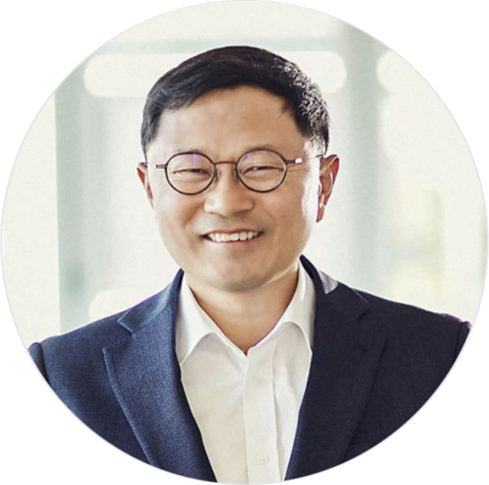

특별강연 소개
바이오텍 전문투자사 LSK 인베스트먼트는 최근 보건복지부에서 K-바이오·백신 3호 펀드 주관 운용사로 선정된 기업으로 바이오헬스 투자 심리가 위축된 상황에서 우수한 역량을 가진 기업으로 바이오헬스 투자 활성화에 큰 역할을 하고 있는 국내 바이오 벤처 캐피탈입니다. LSK 인베스트먼트의 창업자이자 대표이사인 김명기 대표이사님을 모시고 특별강연 자리를 마련하였습니다.

| 강연자 정보 및 주제 |
|---|
바이오벤처 투자 활성화"벤처 캐피탈 : 창업의 동반자" |